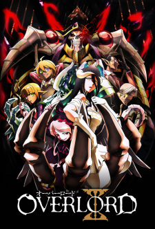
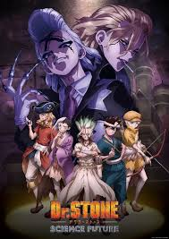

Rekomendasi Berdasarkan Genre
1. Action
Shangri-La Frontier

High school student Rakurou Hizutome has a peculiar hobby of playing poorly made games—ones that are unbalanced or are filled with so many bugs that make them borderline unplayable. The few who share his hobby might recognize him by his in-game name, Sunraku. For his next game, Rakurou is recommended Shangri-La Frontier, a popular and well-received virtual reality game as a breather from the terrible games he has been playing recently.
Once he boots up the game, Rakurou decides to sell off most of his starting gear to gain extra money, leaving himself with only a pair of boxers, a bird mask, and some weapons. He is instantly hooked as he meticulously levels up his avatar. However, after encountering some intimidating monsters, he realizes that he may have underestimated the challenge that a mainstream game can offer. As Rakurou progresses, he must draw on all the skills he has perfected from his previous gaming experience. Before long, Sunraku's eccentric playstyle takes Shangri-La Frontier by storm.
2. Romance
Koe no Katachi

As a wild youth, elementary school student Shouya Ishida sought to beat boredom in the cruelest ways. When the deaf Shouko Nishimiya transfers into his class, Shouya and the rest of his class thoughtlessly bully her for fun. However, when her mother notifies the school, he is singled out and blamed for everything done to her. With Shouko transferring out of the school, Shouya is left at the mercy of his classmates. He is heartlessly ostracized all throughout elementary and middle school, while teachers turn a blind eye.
Now in his third year of high school, Shouya is still plagued by his wrongdoings as a young boy. Sincerely regretting his past actions, he sets out on a journey of redemption: to meet Shouko once more and make amends.
Koe no Katachi tells the heartwarming tale of Shouya's reunion with Shouko and his honest attempts to redeem himself, all while being continually haunted by the shadows of his past.
3. Comedy
Saiki Kusuo no Psi Nan

To the average person, psychic abilities might seem a blessing; for Kusuo Saiki, however, this could not be further from the truth. Gifted with a wide assortment of supernatural abilities ranging from telepathy to x-ray vision, he finds this so-called blessing to be nothing but a curse. As all the inconveniences his powers cause constantly pile up, all Kusuo aims for is an ordinary, hassle-free life—a life where ignorance is bliss. Unfortunately, the life of a psychic is far from quiet. Though Kusuo tries to stay out of the spotlight by keeping his powers a secret from his classmates, he ends up inadvertently attracting the attention of many odd characters, such as the empty-headed Riki Nendou and the delusional Shun Kaidou. Forced to deal with the craziness of the people around him, Kusuo comes to learn that the ordinary life he has been striving for is a lot more difficult to achieve than expected.
4. Fantasy
Overlord

The final hour of the popular virtual reality game Yggdrasil has come. However, Momonga, a powerful wizard and master of the dark guild Ainz Ooal Gown, decides to spend his last few moments in the game as the servers begin to shut down. To his surprise, despite the clock having struck midnight, Momonga is still fully conscious as his character and, moreover, the non-player characters appear to have developed personalities of their own!
Confronted with this abnormal situation, Momonga commands his loyal servants to help him investigate and take control of this new world, with the hopes of figuring out what has caused this development and if there may be others in the same predicament.
5. Isekai
Kage no Jitsuryokusha ni Naritakute

For as long as he can remember, Minoru Kagenou has been fixated on becoming as strong as possible, which has led him to undertake all kinds of rigorous training. This wish, however, does not stem from a desire to be recognized by others; rather, Minoru does everything he can to blend in with the crowd. So, while pretending to be a completely average student during the day, he arms himself with a crowbar and ruthlessly thrashes local biker gangs at night. Yet when Minoru finds himself in a truck accident, his ambitions seemingly come to a sudden end. In his final moments, he laments his powerlessness—no matter how much he trained, there was nothing he could do to overcome his human limitations.
But instead of dying, Minoru reawakens as Cid, the second child of the noble Kagenou family, in another world—one where magic is commonplace. With the power he so desired finally within his grasp, he dons the moniker "Shadow" and establishes Shadow Garden: a group whose sole purpose is to combat the enigmatic Cult of Diablos, an organization born from Cid's imagination. However, as Shadow Garden grows in both membership and influence, it becomes increasingly apparent that the Cult of Diablos is not as fictional as Cid had intended.
6. Adventure
Sousou no Frieren

During their decade-long quest to defeat the Demon King, the members of the hero's party—Himmel himself, the priest Heiter, the dwarf warrior Eisen, and the elven mage Frieren—forge bonds through adventures and battles, creating unforgettable precious memories for most of them.
However, the time that Frieren spends with her comrades is equivalent to merely a fraction of her life, which has lasted over a thousand years. When the party disbands after their victory, Frieren casually returns to her "usual" routine of collecting spells across the continent. Due to her different sense of time, she seemingly holds no strong feelings toward the experiences she went through.
As the years pass, Frieren gradually realizes how her days in the hero's party truly impacted her. Witnessing the deaths of two of her former companions, Frieren begins to regret having taken their presence for granted; she vows to better understand humans and create real personal connections. Although the story of that once memorable journey has long ended, a new tale is about to begin.
7. Sci-fi
Dr. Stone

After five years of harboring unspoken feelings, high-schooler Taiju Ooki is finally ready to confess his love to Yuzuriha Ogawa. Just when Taiju begins his confession however, a blinding green light strikes the Earth and petrifies mankind around the world—turning every single human into stone.
Several millennia later, Taiju awakens to find the modern world completely nonexistent, as nature has flourished in the years humanity stood still. Among a stone world of statues, Taiju encounters one other living human: his science-loving friend Senkuu, who has been active for a few months. Taiju learns that Senkuu has developed a grand scheme—to launch the complete revival of civilization with science. Taiju's brawn and Senkuu's brains combine to forge a formidable partnership, and they soon uncover a method to revive those petrified.
However, Senkuu's master plan is threatened when his ideologies are challenged by those who awaken. All the while, the reason for mankind's petrification remains unknown.